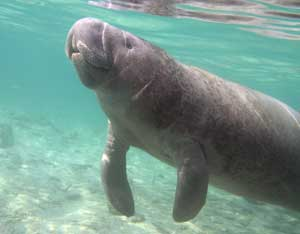

Manatees, the elephantine sea mammals once taken for mermaids, have long been victims of human indifference. With each cow giving birth only once every three years, the loss of even one--due to pollution, boat accidents, or being stranded between canal doors during migration--can affect the stabilization of the entire population. But new underwater technologies being tested at Florida's Cape Canaveral by the U.S. Navy may rally the endangered manatee's revival.
Designed to detect land mines, the piezoelectric co-polymer acoustic sensors created by Florida's Harbor Branch Oceanographic Institution (HBOI) work like garage door sensors. Bundles of sensors placed on each canal door emit signal alerts that bounce back and forth between them. When a migratory manatee on its way to the Gulf of Mexico, for example, passes through the closing gates, the signals are broken and the doors reopen. Seven manatees were detected and saved in the first five weeks of the technology's implementation at Port Canaveral. According to Larry Taylor of the HBOI, six more canals are in the process of acquiring the technology.
|
 PHOTO: ISTOCK/RON MASESSA Manatees are solitary animals and reproduce only once every few years. |
|
|